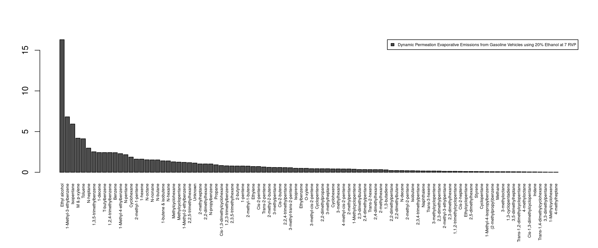
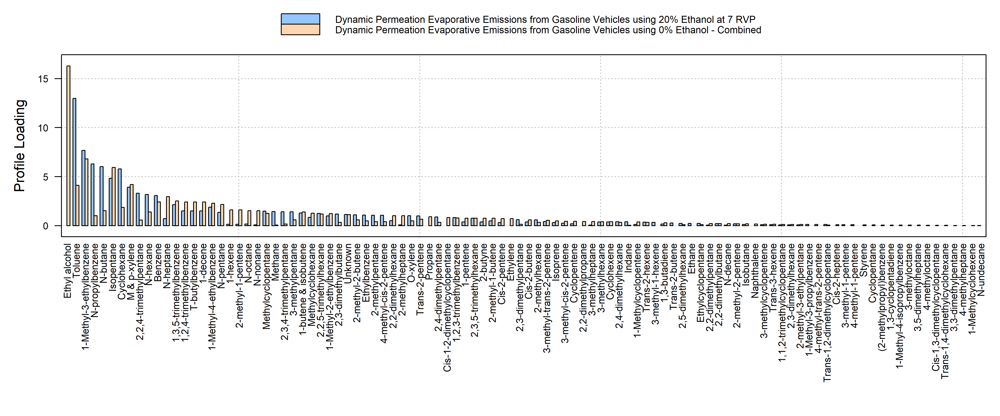

respeciate gives you access to the US/EPA Speciate v5.2 profiles in R
The installation is:
remotes::install_github("atmoschem/respeciate")example
Find profiles based on search criteria
library(respeciate)
x <- sp_find_profile("Ethanol")
x
#> respeciate profile reference
#> 0291 1070 1071 1132 1149 1301 1302 1303 1304 1314 5473 5474 5475 5477 5478 5479
#> 5481 5482 5483 5485 5486 5487 5489 5490 5491 5493 5494 5495 5496 5497 5498 5499
#> 5500 5501 5502 5503 5504 5505 5506 5507 5508 5509 5510 5511 5512 5513 5514 5515
#> 5516 5517 5518 5519 5520 5521 5522 5523 5524 5525 5526 5527 5528 5529 5530 5531
#> 5532 5533 5534 5535 5536 5537 5538 5539 5540 5541 5542 5543 5544 5545 5546 5547
#> 8200 8210 8215 8733 8736 8751 8751a 8752 8754 8755 8757 8758 8760 8761 8763
#> 8764 8765 8766 8767 8768 ...
#> > 160 profiles [showing first 100]speciate
p <- sp_profile("8833")plot
Plotting a profile
#profiles have a default plot option
plot(p)
… or multiple profiles using barplot syntax
#using base barplot
p2 <- sp_profile(c(8833, 8850))
plot(p2, beside=TRUE)